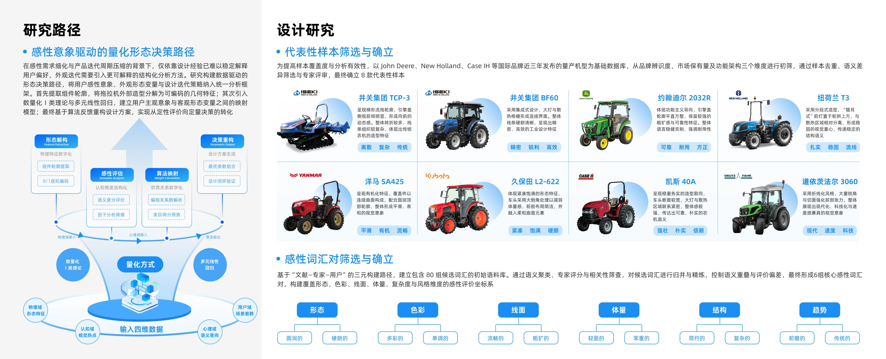
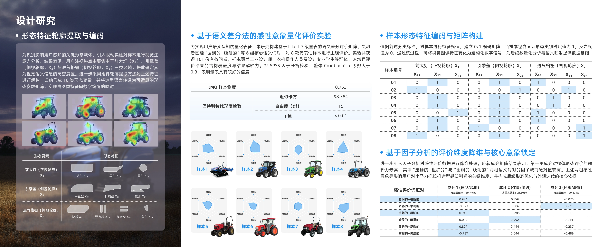
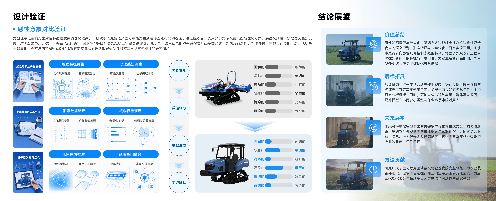
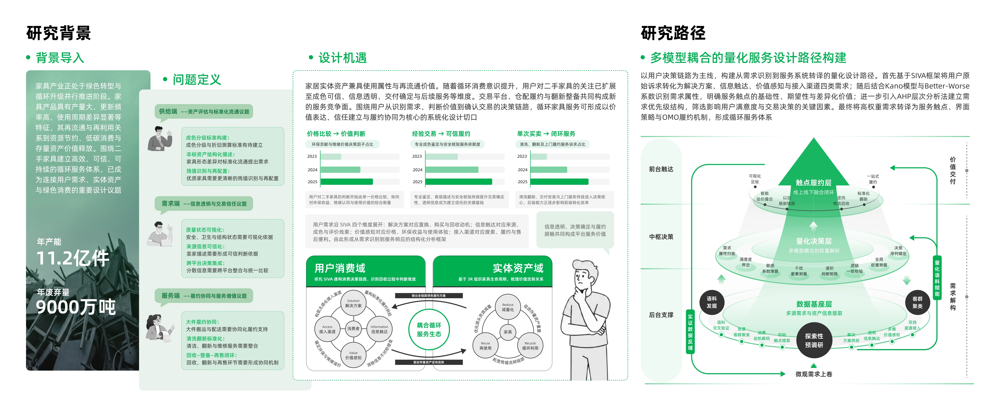
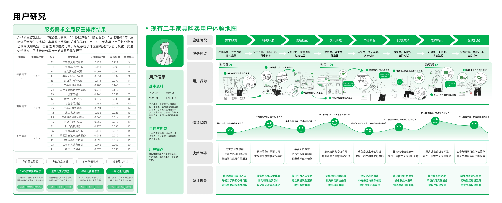
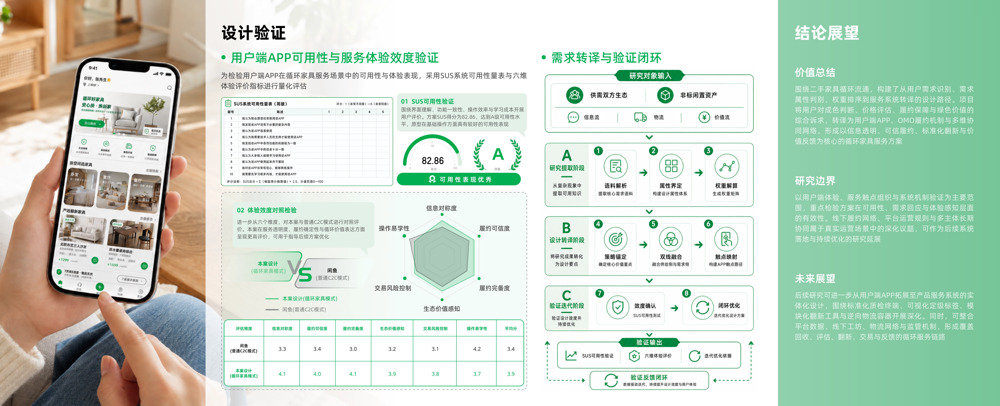
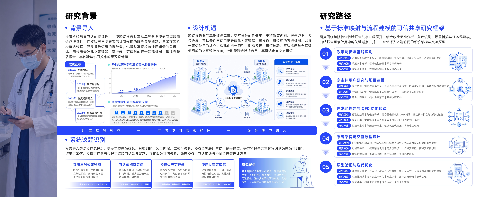
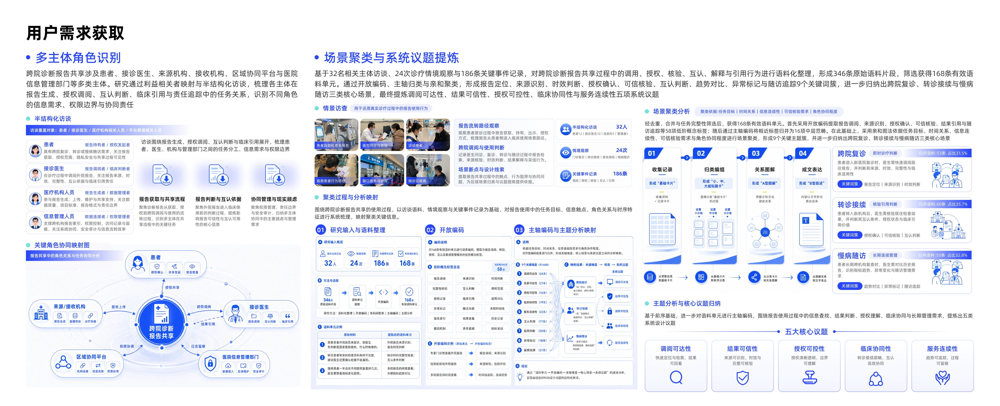
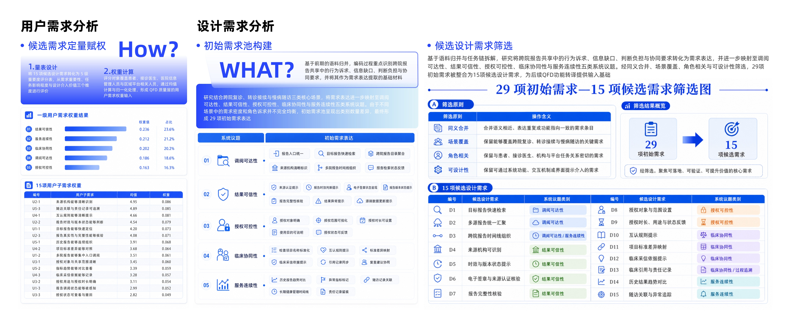
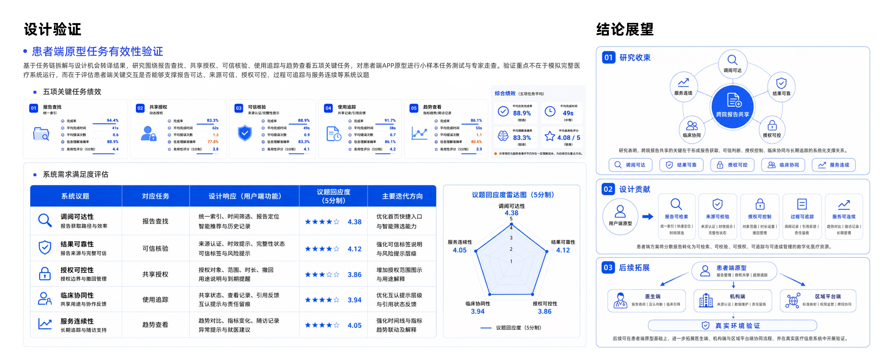

Research Narrative / 研究叙事
问题识别 农业机械外观评价依赖经验，用户感知难以进入造型决策。 变量提取 把前脸、灯具、机罩、比例关系转化为可比较的形态变量。 设计转译 将感知评价结果落到品牌识别、视觉重心和方案迭代。 成果沉淀 形成产品形态评价与构件变量识别能力，并转化为论文成果。
Summary / 项目摘要
项目围绕小马力农业机械外观设计中的品牌识别、视觉重心、构件比例与用户感知问题展开。通过竞品分析、构件关系梳理、感性评价和形态参数推导，将用户对整车外观的模糊判断转化为前脸比例、灯具关系、机罩轮廓、驾驶舱比例和家族化特征等可讨论的设计要素，并进一步服务于产品外观迭代。
Research Question / 核心研究问题
用户如何感知农业机械外观？ 关注可靠感、力量感、亲和度、现代感和品牌识别等主观评价。
感知判断如何进入设计参数？ 将整车感知拆解为前脸比例、构件轮廓、视觉重心和家族化特征。
Method Process / 方法路径
品牌与竞品分析 构件关系梳理 用户感知评价 形态变量提取 设计参数转译 外观方案迭代 语义验证
Evidence / 研究证据
研究背景与项目定位。 设计对象、品牌语义与问题定义。 
竞品分析与外观感知线索。 
研究流程、变量整理与方案路径。 构件分析与形态评价。 设计推导与方案迭代。 方案比较与视觉验证。 
最终方案与研究转化。
Design Translation / 设计转译
感知目标 形态变量 设计转译
可靠感 前脸宽高比例、构件秩序 提高前脸稳定性，强化横向结构和对称关系。 力量感 机罩体量、下部支撑 增强机罩整体性和下部视觉支撑，使整车更稳重。 亲和度 灯具表情、轮廓曲率 控制折线锋利程度，降低攻击性，提升亲和感。 品牌识别 家族化前脸、色彩关系 延续井关品牌识别特征，形成系列化外观语言。
Research Capability / 能力沉淀
产品形态评价 能够将用户对外观的主观感受转化为可分析的语义维度。
构件变量提取 能够从灯具、机罩、格栅和比例关系中识别影响整车感知的关键变量。
设计参数转译 能够将研究判断转化为可落地的产品形态与方案迭代依据。
Project 02 / Service Study
面向二手家具循环流通的用户端服务系统设计
产品服务系统｜循环交易｜用户需求转译
用户需求 服务流程 平台模式 OMO服务 界面原型
项目回应二手家具再次流通中的估值、信任、信息透明、质量判断与履约协同问题，通过用户需求识别、需求优先级分析、利益相关者梳理和服务蓝图构建，将分散的交易行为转化为线上平台与线下服务协同的产品服务系统。
Research Narrative / 研究叙事
问题识别 循环家具交易围绕信任建立、估值判断、交付协同和绿色价值表达展开。 需求排序 通过用户需求分析识别平台必须优先回应的服务节点。 系统构建 把线上平台、检测估值、物流履约和售后追踪组织为PSS。 原型验证 用服务蓝图、APP原型和SUS评价验证服务系统完整性。
Summary / 项目摘要
项目围绕成色判断、来源透明、估值依据、物流交付和绿色价值表达五类用户关注点展开。通过用户需求研究和服务系统建模，构建包含闲置发布、检测估值、交易匹配、物流履约、售后追踪与循环价值表达的用户端服务系统。
Research Question / 核心研究问题
如何建立交易信任？ 让用户清楚家具成色、来源、估值依据和售后责任。
需求如何转化为服务功能？ 把信任、价格、交付和绿色价值转化为平台功能与服务节点。
线上线下如何协同？ 组织平台、检测、物流和售后主体之间的服务关系。
Method Process / 方法路径
用户访谈与问卷 需求分类 Kano/AHP分析 利益相关者梳理 服务蓝图构建 APP原型设计 SUS评价
Evidence / 研究证据
研究背景与循环交易问题。 
用户需求与交易阻力识别。 需求分类与系统架构。 
服务主体、价值关系与流程组织。 服务蓝图与OMO流程。 用户端APP原型。 
可用性评价与设计总结。
Design Translation / 设计转译
研究发现 设计转译 对应输出
用户难以判断家具真实状态 建立标准化检测与成色说明 检测报告、损伤标注、修复记录 用户缺少价格判断依据 提供在线估值与价格对比 估值模型、价格区间、历史参考 交易过程可追踪 建立服务进度与物流追踪 状态节点、预约服务、履约提醒 绿色价值感知弱 将循环价值可视化 碳减排提示、环保标签、循环记录
Research Capability / 能力沉淀
用户需求转译 能够将用户对信任、估值、透明和履约的需求转化为服务功能。
产品服务系统建模 能够组织产品、平台、检测、物流和售后主体之间的协同关系。
服务流程验证 能够通过原型和评价方法检验服务系统的可用性和完整性。
Project 03 / System Study
面向检查检验互认的跨院诊断报告共享系统设计
医疗服务系统｜信息架构｜多主体协同
用户语料分析 需求聚类 信息架构 动态授权 SUS评价
项目聚焦跨院复诊、转诊接续和会诊互通场景，围绕患者、医生、医院和平台之间的报告查找、来源核验、授权控制、互认状态和连续使用问题，构建可信、可控、可追溯的跨院报告共享系统。
Research Narrative / 研究叙事
问题识别 跨院复诊中报告来源、授权边界和互认状态难以被清晰理解。 关系建模 梳理患者、医生、医院与平台之间的信息流、权限流和任务流。 交互转译 把核验、授权、摘要、追溯转化为可操作的信息架构。 系统验证 通过原型、任务评价和SUS验证复杂信息系统的可用性。
Summary / 项目摘要
项目处理跨院报告共享中的使用阻力，将患者授权、来源核验、互认状态和使用记录组织到一条服务链中。研究从用户语料、任务链和功能需求出发，通过需求聚类、QFD转译、信息架构设计和原型评价，将复杂医疗协同问题转化为可理解、可操作、可验证的数字服务系统。
Research Question / 核心研究问题
患者侧 患者如何清楚掌握报告来源、授权范围和使用记录？
医生侧 医生如何快速理解报告可信度、互认状态和临床参考价值？
系统侧 系统如何协调患者、医生、医院和平台之间的信息权限与服务流程？
Method Process / 方法路径
用户语料收集 关键词聚类 多主体需求分析 任务链梳理 QFD需求转译 信息架构设计 原型迭代 可用性评价
Evidence / 研究证据
用户研究与语料分析。 
需求聚类与问题定义。 任务链与信息架构。 
多主体服务关系。 
功能模块与交互流程。 QFD需求转译。 核心界面原型。 
可用性评价。
Design Translation / 设计转译
系统约束 设计转译 界面/服务输出
报告来源难以判断 增加来源机构、时间和核验状态 来源标识、核验状态标签 授权边界不清晰 引入动态授权和权限管理 授权范围、时效设置、撤销入口 医生快速理解困难 生成结构化摘要和重点标记 摘要卡、异常项提示、历史对比 跨院使用不可追溯 建立报告访问与使用记录 查看记录、共享路径、访问日志
Research Capability / 能力沉淀
复杂信息组织 能够将报告来源、授权边界和互认状态组织为清晰的信息架构。
多主体协同分析 能够处理患者、医生、医院和平台之间的任务关系与权限关系。
原型验证能力 能够通过任务绩效、SUS评价和专家走查验证系统设计有效性。